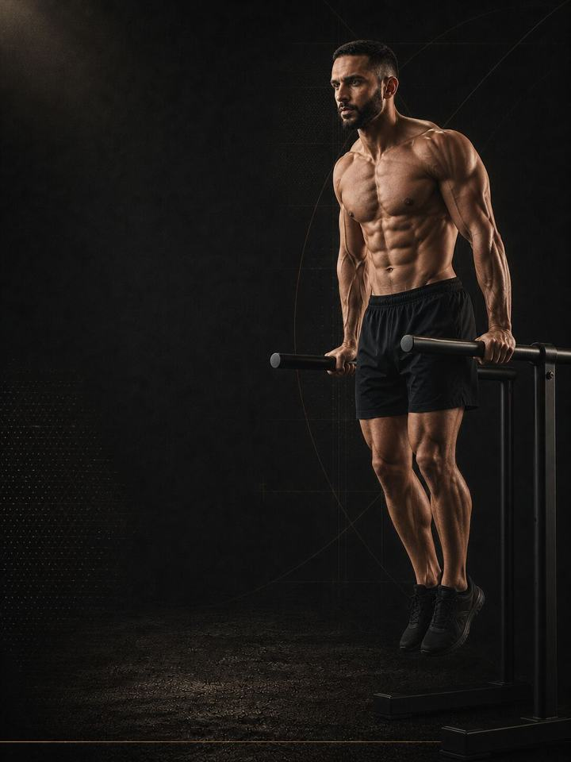

دفع / سحب / أرجل
ابنِ العضلات في ستة أيام أسبوعيًا، مع تمرين كل عضلة مرتين وهي في كامل نشاطها، وبلا جلسة تتجاوز الساعة.
- مناسب لـستة أيام في الأسبوع، للرافعين ذوي الخبرة
- أيام التدريب6 أيام في النادي أسبوعيًا، ويوم راحة كامل
- مدة الجلسة43–57 دقيقة
- المعداتنادٍ متكامل: بار ودمبلات وكيبل وأجهزة
- الصيغةملف PDF للهاتف، وكل تمرين مرتبط بفيديو توضيحي
المتجر يفتح قريبًا. حاليًا ينسخ زر الشراء رسالة قصيرة ويفتح إنستغرام: الصقها وتستلم الملف هناك.
لمن هذا البرنامج
ستة أيام في الأسبوع ليست أكثر فعالية من أربعة بسبب شيء مميّز في الرقم ستة. إنها تنجح لأنها تمنحك التركيز. كل جلسة تحمل عائلة حركية واحدة، فتأتي أصعب رفعة في كل يوم وأنت في كامل نشاطك، وتبقى الجلسات أقل من ساعة، وتبقى كل عضلة تتمرّن مرتين في الأسبوع.
والثمن حقيقي. ستة أيام تعني أن تتمرّن في أيام لا ترغب فيها في التمرين، ودورة الدفع والسحب والأرجل مع جلسات تفوتك بانتظام تقدّم أقل من علوي / سفلي يُطبَّق كما يجب في أربعة أيام. هذا هو التقسيم لمن يتّسع جدوله ورغبته فعلًا لست جلسات قصيرة.
يناسب الرافعين ذوي الخبرة الذين يعرفون مسبقًا ما يستطيع تعافيهم تحمّله.
لا يناسبك إذا لم تكمل بعد كتلة تدريبية كاملة على تقسيم من أربعة أيام. طبّق علوي / سفلي أولًا.
أسبوعك
دفع ثم سحب ثم أرجل، مرتين، مع يوم راحة كامل.
| الأسبوع | الأحد | الاثنين | الثلاثاء | الأربعاء | الخميس | الجمعة | السبت |
|---|---|---|---|---|---|---|---|
| المعتاد | اليوم 1 دفع | اليوم 2 سحب | اليوم 3 أرجل | اليوم 4 دفع | اليوم 5 سحب | راحة | اليوم 6 أرجل |
| المزدحم (4 أيام) | اليوم 1 دفع | اليوم 2 سحب | راحة | اليوم 3 أرجل | اليوم 4 دفع | راحة | راحة |
ويصلح أيضًا نظام ثلاثة أيام تمرين، ثم يوم راحة، ثم ثلاثة أيام تمرين، فيقع يوم الراحة حيث يحتاجه الأسبوع.
الدورة هي الوحدة، لا التقويم. في الأسبوع القصير، حافظ على الدورة وتوقّف حيث يتوقّف الأسبوع. يبدأ الأسبوع التالي من اليوم الذي فاتك، لا من اليوم 1.
الجولتان ليستا نسختين متطابقتين. كل عائلة حركية تتكرّر مرتين برفعة رئيسية مختلفة: الصدر ثم الأكتاف، والسحب العمودي ثم التجديف، والسكوات ثم مفصلة الورك. ما يتصدّر الجلسة هو ما تحسّنه تلك الجلسة.
كل جلسة تسير بالطريقة نفسها:
- الإحماء، 8–10 دقائق. الوركان والكتفان والكاحلان قبل أول مجموعة ثقيلة.
- التمرين المركّب الرئيسي، 15–20 دقيقة. أول رفعتين في اليوم. راحة كاملة، وأفضل أداء فني، وأثقل الأحمال.
- العمل الثانوي، 10–15 دقيقة. منتصف الجلسة براحة متوسطة.
- العزل، 10–12 دقيقة. الذراعان والأكتاف والسمانة والجذع. راحة قصيرة، وقرب من الفشل، وفي النهاية.
الترتيب مقصود. التمرين المركّب الأصعب يأتي أولًا وأنت في كامل نشاطك، لأن الوضعية والحمل يهمّان فيه أكثر من أي مكان آخر. وتمارين العزل تأتي أخيرًا لأنها الأقل تطلّبًا من الناحية الفنية والأسهل إنهاءً وأنت متعب.
كيف تتقدّم الأسابيع الـ12
ثلاث مراحل، مدة كل منها أربعة أسابيع. ترتفع المجموعات لكل عضلة خلال المرحلة 2. وتحتفظ المرحلة 3 بالمجموعات نفسها، بينما تقلّ التكرارات ويرتفع الجهد.
| الأسابيع 1–4 | الأسابيع 5–8 | الأسابيع 9–12 | |
|---|---|---|---|
| المرحلة | التوتر الميكانيكي | تراكم الحجم | تكثيف الحمل |
| الهدف | بناء الأداء الفني وتحمّل الأنسجة الضامّة بحمل متوسط | إضافة مجموعات أسبوعية لكل عضلة لتحفيز النمو | رفع الحمل وإنهاء المجموعات أقرب إلى الفشل |
| المجموعات الفعلية أسبوعيًا | 108 | 124 | 124 |
| متوسط الجهد | جهد 8.1/10 | جهد 8.1/10 | جهد 8.5/10 |
المرحلة في لمحة
المجموعات التدريبية أسبوعيًا حسب ما تدرّبه. الخط المتقطع هو مستوى الجهد.
هذا المقياس هو الجهد (RPE)، أي تقييم من 1 إلى 10 لمدى صعوبة المجموعة: «جهد 8/10» يعني أن توقف المجموعة ويتبقى في الخزان نحو تكرارين جيدين.
المجموعات الأسبوعية لكل عضلة
| العضلة | الأسابيع 1–4 | الأسابيع 5–8 | الأسابيع 9–12 |
|---|---|---|---|
| الصدر | 12 | 14 | 14 |
| الأكتاف | 21 | 24 | 24 |
| الذراعان (عمل مباشر) | 12 | 12 | 12 |
| الظهر | 15 | 19 | 19 |
| العضلة الرباعية | 15 | 17 | 17 |
| العضلات الخلفية للفخذ | 6 | 8 | 8 |
| الأرداف | 12 | 14 | 14 |
| السمانة | 6 | 8 | 8 |
أسابيع التخفيف: الأسبوعان 6 و12 أخف. تنفّذ نصف المجموعات بجهد أقل بـ1–2 درجة، وتحتفظ بالتمارين نفسها، وتعيد الاختبار وأنت مرتاح.
القواعد التي تجعله ينجح
- أضف تكرارًا قبل أن تضيف وزنًا. عندما تصل كل مجموعة إلى أعلى النطاق بالجهد المذكور لجلستين متتاليتين، أضف 2.5 كغ في رفعات الجزء العلوي، أو 5 كغ في رفعات الجزء السفلي، أو درجة واحدة على الجهاز. ثم عُد إلى أسفل النطاق واصعد من جديد. تغيير واحد في كل مرة يخبرك بما نجح.
- أضف مجموعة قبل أن تضيف تمرينًا. عمل أكثر على رفعة تعرفها أفضل من رفعة جديدة لم تؤدّها من قبل. والمرحلة 2 مبنية على هذا تحديدًا.
- تمارين العزل تقترب من الفشل. التمارين المركّبة تتوقّف عند الجهد المذكور، لأن الأداء الفني هو ما يقرّر سلامتها. أما ثني الذراعين والرفرفة والسمانة فليست لديها هذه المشكلة، فأكمل تلك المجموعات.
- توقّف تقدّم الرفعة إشارة تعافٍ أولًا. جلستان دون تقدّم في الرفعة نفسها تعنيان عادةً مشكلة في النوم أو الطعام، لا في البرنامج. ومع ستة أيام في الأسبوع، يحدث ذلك أسرع.
لماذا تحتل المجموعات لكل عضلة المركز
المجموعات الأسبوعية لكل عضلة هي الرافعة التي تحرّك حجم العضلات. مجموعات أكثر تعني نموًا أكبر، مع تناقص في العائد، ونادرًا ما تتابع الدراسات أحدًا بعد نحو عشر مجموعات صعبة لكل عضلة أسبوعيًا. والاقتراب من الفشل مهم لحجم العضلات، لكنه ليس كذلك للقوة، إذ يؤدي الحمل الثقيل مع تكرارات متبقية المهمة نفسها. يتعامل البرنامج مع هذه النتائج على أنها هيكله، ومع اختيار التمارين على أنه تفاصيل.
المصطلحات
- الكتلة التدريبية: 12 أسبوعًا. هذا البرنامج. تطوّر الكتلة الواحدة مجموعة واحدة من الصفات إلى مستوى محدّد.
- المرحلة (الدورة المتوسطة): 4 أسابيع. تستهدف كل منها صفة واحدة. وأربعة أسابيع اختيار لا قاعدة، فالمدة تتبع الهدف.
- الأسبوع التدريبي (الدورة الصغرى): حيث يرتفع الجهد، وتُضاف المجموعات، ويقع أسبوع التخفيف.
- السنة التدريبية (الدورة الكبرى): أربع كتل بالترتيب (الأساس، والبناء، والمنافسة، والاستشفاء)، نحو 48 أسبوعًا.
كيف تقيس تقدّمك
يتضمّن ملف PDF اختبارات معيارية وجدولًا لتسجيل النتائج. تسجّل نقطة البداية، ثم تعيد الاختبار وأنت مرتاح في أسبوعي التخفيف، 6 و12.
شكل التقدّم الجيد
- الأسابيع 1–4: تبدو الأوزان سهلة عن قصد، ويكون ألم العضلات في أعلى مستوياته. هذه المرحلة تمهّد للأسابيع الثمانية التالية.
- الأسابيع 5–8: تطول الجلسات، ويصبح الاحتقان العضلي واضحًا، ويتحرّك شريط القياس قبل أن تلاحظ المرآة الفرق.
- الأسابيع 9–12: تثبت المجموعات، وتقلّ التكرارات، ويرتفع الجهد، وتلحق القوة بحجم العضلات.
أفضل نتيجة: خصر بقي ثابتًا بينما ازداد محيط العضد والفخذ.
خارج النادي
التمرين هو الإشارة، والطعام والنوم يقرّران قدرة الجسم على الاستجابة لها. تُبنى العضلات من فائض طاقة صغير، ونحو 1.6–2.2 غ من البروتين لكل كيلوغرام من وزن الجسم يوميًا، و7–9 ساعات من النوم. إذا قصّرت في الأكل أو النوم، تحوّلت اثنا عشر أسبوعًا من التمرين إلى اثني عشر أسبوعًا من الإرهاق بنتيجة ضئيلة. هذا برنامج تدريب لا خطة تغذية. وللحصول على أهداف فردية، راجع أخصائي تغذية معتمدًا.
الأدلة العلمية
كل برنامج في المكتبة مبني على أبحاث منشورة، وقوة تلك الأبحاث مذكورة صراحةً لا ضمنًا. وحيث تكون الأدلة محدودة، تقول الصفحة ذلك.
| النتيجة | المصدر | ما لا تُظهره |
|---|---|---|
| يزداد نمو العضلات مع عدد المجموعات الأسبوعية لكل عضلة، في علاقة جرعة واستجابة متدرّجة. | Schoenfeld, Ogborn & Krieger, Journal of Sports Sciences 2017. Systematic review and meta-regression, 15 studies, 34 treatment groups, trained and untrained participants. PMID 27433992 | كل مجموعة أسبوعية إضافية تساوي نحو 0.37% من النمو الإضافي. التأثير متدرّج لا مفتوح بلا حد، ونادرًا ما تصل الدراسات إلى 10 مجموعات أو أكثر. |
| أي وصفة تدريب معقولة أفضل من عدم التدريب. الأحمال الأثقل تحتل المرتبة الأعلى للقوة، والمجموعات المتعددة تحتل المرتبة الأعلى لحجم العضلات. | Currier, McLeod, Banfield et al., British Journal of Sports Medicine 2023. Bayesian network meta-analysis, 178 strength and 119 hypertrophy studies, 5,097 and 3,364 participants, about 46% women. PMID 37414459 | كانت الفروق بين الوصفات صغيرة، وكلها نجحت. |
| تدريب القوة يخفض الإصابات الرياضية إلى أقل من ثلث معدلها في المجموعة الضابطة. أما الإطالة فلا تخفضها. | Lauersen, Bertelsen & Andersen, British Journal of Sports Medicine 2014. Meta-analysis of 25 randomised controlled trials, 26,610 participants, 3,464 injuries. PMID 24100287 | نسبة الخطر 0.32 لتدريب القوة و0.96 للإطالة. تفاوتت التجارب كثيرًا، ولم تكن الجرعة موحّدة. |
ماذا بعد
بعد 12 أسبوعًا:
- غيّر المحفّز: تقسيم العضلات
- أيام أقل في الأسبوع: دفع/سحب/أرجل + علوي/سفلي
- منطقة واحدة تحتاج إلى عمل: السلسلة التصحيحية
قبل الشراء: احصل على موافقة طبية أولًا إذا
- كان لديك ألم في الصدر، أو ضيق تنفس غير معتاد، أو خفقان، أو دوخة أثناء المجهود.
- كان لديك ضغط دم مرتفع غير منضبط، أو مرض قلبي معروف، أو خضعت لعملية جراحية مؤخرًا.
- كنتِ حاملًا أو بعد الولادة بفترة قصيرة. احصلي على موافقة وبرنامج مخصص أولًا.
- كان لديك ألم حاد في مفصل واحد لا يهدأ. ابدأ ببرنامج أكسس التصحيحي المناسب.
هذا البرنامج إرشاد عام للياقة البدنية، ولا يغني عن التقييم الطبي.
المتجر يفتح قريبًا. حاليًا ينسخ زر الشراء رسالة قصيرة ويفتح إنستغرام: الصقها وتستلم الملف هناك.
اقرأ الأبحاث وراء هذا البرنامج
- ما مدى صعوبة المجموعة؟ شرح جهد 7/10 · 3 دقائق قراءة